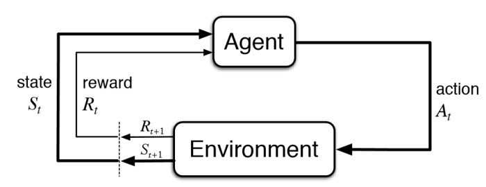
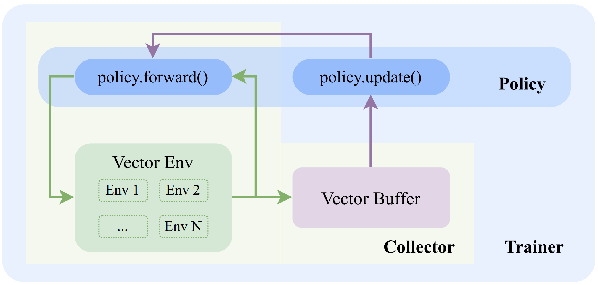

Deep Q Network¶
Deep reinforcement learning has achieved significant successes in various applications. Deep Q Network (DQN) [MKS+15] is the pioneer one. In this tutorial, we will show how to train a DQN agent on CartPole with Tianshou step by step. The full script is at test/discrete/test_dqn.py.
Contrary to existing Deep RL libraries such as RLlib, which could only accept a config specification of hyperparameters, network, and others, Tianshou provides an easy way of construction through the code-level.
Overview¶
In reinforcement learning, the agent interacts with environments to improve itself.
{kind=link}
There are three types of data flow in RL training pipeline:
Agent to environment:
actionwill be generated by agent and sent to environment;Environment to agent:
env.steptakes action, and returns a tuple of(observation, reward, done, info);Agent-environment interaction to agent training: the data generated by interaction will be stored and sent to the learner of agent.
In the following sections, we will set up (vectorized) environments, policy (with neural network), collector (with buffer), and trainer to successfully run the RL training and evaluation pipeline. Here is the overall system:
{kind=link}
Make an Environment¶
First of all, you have to make an environment for your agent to interact with. You can use gym.make(environment_name) to make an environment for your agent. For environment interfaces, we follow the convention of Gymnasium. In your Python code, simply import Tianshou and make the environment:
import gymnasium as gym
import tianshou as ts
env = gym.make('CartPole-v0')
CartPole-v0 includes a cart carrying a pole moving on a track. This is a simple environment with a discrete action space, for which DQN applies. You have to identify whether the action space is continuous or discrete and apply eligible algorithms. DDPG [LHP+16], for example, could only be applied to continuous action spaces, while almost all other policy gradient methods could be applied to both.
Here is the detail of useful fields of CartPole-v0:
state: the position of the cart, the velocity of the cart, the angle of the pole and the velocity of the tip of the pole;action: can only be one of[0, 1, 2], for moving the cart left, no move, and right;reward: each timestep you last, you will receive a +1reward;done: if CartPole is out-of-range or timeout (the pole is more than 15 degrees from vertical, or the cart moves more than 2.4 units from the center, or you last over 200 timesteps);info: extra info from environment simulation.
The goal is to train a good policy that can get the highest reward in this environment.
Setup Vectorized Environment¶
If you want to use the original gym.Env:
train_envs = gym.make('CartPole-v0')
test_envs = gym.make('CartPole-v0')
Tianshou supports vectorized environment for all algorithms. It provides four types of vectorized environment wrapper:
DummyVectorEnv: the sequential version, using a single-thread for-loop;SubprocVectorEnv: use python multiprocessing and pipe for concurrent execution;ShmemVectorEnv: use share memory instead of pipe based on SubprocVectorEnv;RayVectorEnv: use Ray for concurrent activities and is currently the only choice for parallel simulation in a cluster with multiple machines. It can be used as follows: (more explanation can be found at Parallel Sampling)
train_envs = ts.env.DummyVectorEnv([lambda: gym.make('CartPole-v0') for _ in range(10)])
test_envs = ts.env.DummyVectorEnv([lambda: gym.make('CartPole-v0') for _ in range(100)])
Here, we set up 10 environments in train_envs and 100 environments in test_envs.
You can also try the super-fast vectorized environment EnvPool by
import envpool
train_envs = envpool.make_gymnasium("CartPole-v0", num_envs=10)
test_envs = envpool.make_gymnasium("CartPole-v0", num_envs=100)
For the demonstration, here we use the second code-block.
Warning
If you use your own environment, please make sure the seed method is set up properly, e.g.,
def seed(self, seed):
np.random.seed(seed)
Otherwise, the outputs of these envs may be the same with each other.
Build the Network¶
Tianshou supports any user-defined PyTorch networks and optimizers. Yet, of course, the inputs and outputs must comply with Tianshou’s API. Here is an example:
import torch, numpy as np
from torch import nn
class Net(nn.Module):
def __init__(self, state_shape, action_shape):
super().__init__()
self.model = nn.Sequential(
nn.Linear(np.prod(state_shape), 128), nn.ReLU(inplace=True),
nn.Linear(128, 128), nn.ReLU(inplace=True),
nn.Linear(128, 128), nn.ReLU(inplace=True),
nn.Linear(128, np.prod(action_shape)),
)
def forward(self, obs, state=None, info={}):
if not isinstance(obs, torch.Tensor):
obs = torch.tensor(obs, dtype=torch.float)
batch = obs.shape[0]
logits = self.model(obs.view(batch, -1))
return logits, state
state_shape = env.observation_space.shape or env.observation_space.n
action_shape = env.action_space.shape or env.action_space.n
net = Net(state_shape, action_shape)
optim = torch.optim.Adam(net.parameters(), lr=1e-3)
You can also use pre-defined MLP networks in common, discrete, and continuous. The rules of self-defined networks are:
Input: observation
obs(may be anumpy.ndarray,torch.Tensor, dict, or self-defined class), hidden statestate(for RNN usage), and other informationinfoprovided by the environment.Output: some
logits, the next hidden statestate. The logits could be a tuple instead of atorch.Tensor, or some other useful variables or results during the policy forwarding procedure. It depends on how the policy class process the network output. For example, in PPO [SWD+17], the return of the network might be(mu, sigma), statefor Gaussian policy.
Note
The logits here indicates the raw output of the network. In supervised learning, the raw output of prediction/classification model is called logits, and here we extend this definition to any raw output of the neural network.
Setup Policy¶
We use the defined net and optim above, with extra policy hyper-parameters, to define a policy. Here we define a DQN policy with a target network:
policy = ts.policy.DQNPolicy(net, optim, discount_factor=0.9, estimation_step=3, target_update_freq=320)
Setup Collector¶
The collector is a key concept in Tianshou. It allows the policy to interact with different types of environments conveniently. In each step, the collector will let the policy perform (at least) a specified number of steps or episodes and store the data in a replay buffer.
The following code shows how to set up a collector in practice. It is worth noticing that VectorReplayBuffer is to be used in vectorized environment scenarios, and the number of buffers, in the following case 10, is preferred to be set as the number of environments.
train_collector = ts.data.Collector(policy, train_envs, ts.data.VectorReplayBuffer(20000, 10), exploration_noise=True)
test_collector = ts.data.Collector(policy, test_envs, exploration_noise=True)
The main function of collector is the collect function, which can be summarized in the following lines:
result = self.policy(self.data, last_state) # the agent predicts the batch action from batch observation
act = to_numpy(result.act)
self.data.update(act=act) # update the data with new action/policy
result = self.env.step(act, ready_env_ids) # apply action to environment
obs_next, rew, done, info = result
self.data.update(obs_next=obs_next, rew=rew, done=done, info=info) # update the data with new state/reward/done/info
Train Policy with a Trainer¶
Tianshou provides onpolicy_trainer(), offpolicy_trainer(), and offline_trainer(). The trainer will automatically stop training when the policy reach the stop condition stop_fn on test collector. Since DQN is an off-policy algorithm, we use the offpolicy_trainer() as follows:
result = ts.trainer.offpolicy_trainer(
policy, train_collector, test_collector,
max_epoch=10, step_per_epoch=10000, step_per_collect=10,
update_per_step=0.1, episode_per_test=100, batch_size=64,
train_fn=lambda epoch, env_step: policy.set_eps(0.1),
test_fn=lambda epoch, env_step: policy.set_eps(0.05),
stop_fn=lambda mean_rewards: mean_rewards >= env.spec.reward_threshold)
print(f'Finished training! Use {result["duration"]}')
The meaning of each parameter is as follows (full description can be found at offpolicy_trainer()):
max_epoch: The maximum of epochs for training. The training process might be finished before reaching themax_epoch;step_per_epoch: The number of environment step (a.k.a. transition) collected per epoch;step_per_collect: The number of transition the collector would collect before the network update. For example, the code above means “collect 10 transitions and do one policy network update”;episode_per_test: The number of episodes for one policy evaluation.batch_size: The batch size of sample data, which is going to feed in the policy network.train_fn: A function receives the current number of epoch and step index, and performs some operations at the beginning of training in this epoch. For example, the code above means “reset the epsilon to 0.1 in DQN before training”.test_fn: A function receives the current number of epoch and step index, and performs some operations at the beginning of testing in this epoch. For example, the code above means “reset the epsilon to 0.05 in DQN before testing”.stop_fn: A function receives the average undiscounted returns of the testing result, return a boolean which indicates whether reaching the goal.logger: See below.
The trainer supports TensorBoard for logging. It can be used as:
from torch.utils.tensorboard import SummaryWriter
from tianshou.utils import TensorboardLogger
writer = SummaryWriter('log/dqn')
logger = TensorboardLogger(writer)
Pass the logger into the trainer, and the training result will be recorded into the TensorBoard.
The returned result is a dictionary as follows:
{
'train_step': 9246,
'train_episode': 504.0,
'train_time/collector': '0.65s',
'train_time/model': '1.97s',
'train_speed': '3518.79 step/s',
'test_step': 49112,
'test_episode': 400.0,
'test_time': '1.38s',
'test_speed': '35600.52 step/s',
'best_reward': 199.03,
'duration': '4.01s'
}
It shows that within approximately 4 seconds, we finished training a DQN agent on CartPole. The mean returns over 100 consecutive episodes is 199.03.
Save/Load Policy¶
Since the policy inherits the class torch.nn.Module, saving and loading the policy are exactly the same as a torch module:
torch.save(policy.state_dict(), 'dqn.pth')
policy.load_state_dict(torch.load('dqn.pth'))
Watch the Agent’s Performance¶
Collector supports rendering. Here is the example of watching the agent’s performance in 35 FPS:
policy.eval()
policy.set_eps(0.05)
collector = ts.data.Collector(policy, env, exploration_noise=True)
collector.collect(n_episode=1, render=1 / 35)
If you’d like to manually see the action generated by a well-trained agent:
# assume obs is a single environment observation
action = policy(Batch(obs=np.array([obs]))).act[0]
Train a Policy with Customized Codes¶
“I don’t want to use your provided trainer. I want to customize it!”
Tianshou supports user-defined training code. Here is the code snippet:
# pre-collect at least 5000 transitions with random action before training
train_collector.collect(n_step=5000, random=True)
policy.set_eps(0.1)
for i in range(int(1e6)): # total step
collect_result = train_collector.collect(n_step=10)
# once if the collected episodes' mean returns reach the threshold,
# or every 1000 steps, we test it on test_collector
if collect_result['rews'].mean() >= env.spec.reward_threshold or i % 1000 == 0:
policy.set_eps(0.05)
result = test_collector.collect(n_episode=100)
if result['rews'].mean() >= env.spec.reward_threshold:
print(f'Finished training! Test mean returns: {result["rews"].mean()}')
break
else:
# back to training eps
policy.set_eps(0.1)
# train policy with a sampled batch data from buffer
losses = policy.update(64, train_collector.buffer)
For further usage, you can refer to the Cheat Sheet.
References
Volodymyr Mnih, Koray Kavukcuoglu, David Silver, Andrei A. Rusu, Joel Veness, Marc G. Bellemare, Alex Graves, Martin A. Riedmiller, Andreas Fidjeland, Georg Ostrovski, Stig Petersen, Charles Beattie, Amir Sadik, Ioannis Antonoglou, Helen King, Dharshan Kumaran, Daan Wierstra, Shane Legg, and Demis Hassabis. Human-level control through deep reinforcement learning. Nature, 518(7540):529–533, 2015. URL: https://doi.org/10.1038/nature14236, doi:10.1038/nature14236.
Timothy P. Lillicrap, Jonathan J. Hunt, Alexander Pritzel, Nicolas Heess, Tom Erez, Yuval Tassa, David Silver, and Daan Wierstra. Continuous control with deep reinforcement learning. In 4th International Conference on Learning Representations, ICLR 2016, San Juan, Puerto Rico, May 2-4, 2016, Conference Track Proceedings. 2016. URL: http://arxiv.org/abs/1509.02971.
John Schulman, Filip Wolski, Prafulla Dhariwal, Alec Radford, and Oleg Klimov. Proximal policy optimization algorithms. CoRR, 2017. URL: http://arxiv.org/abs/1707.06347, arXiv:1707.06347.